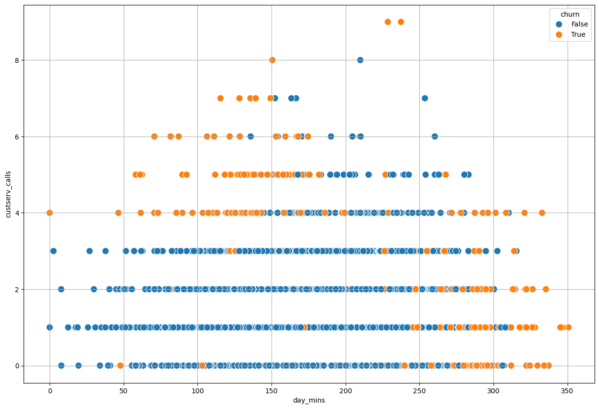
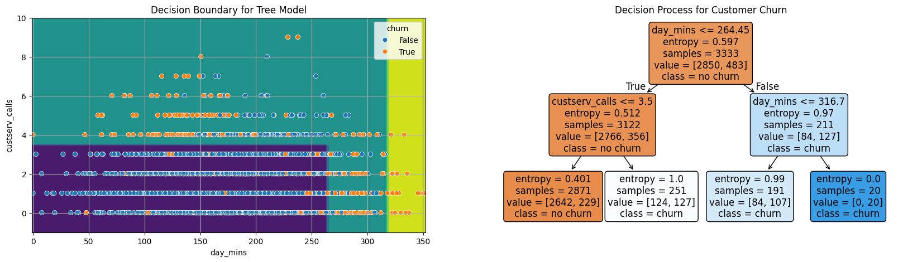
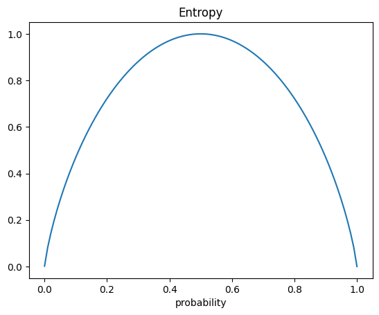
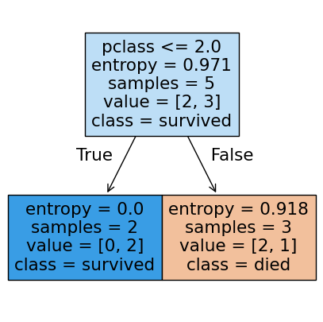
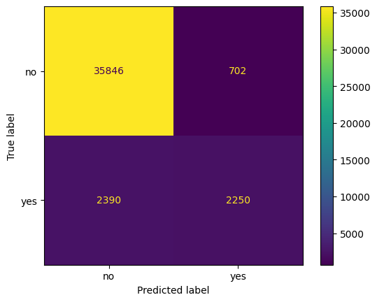
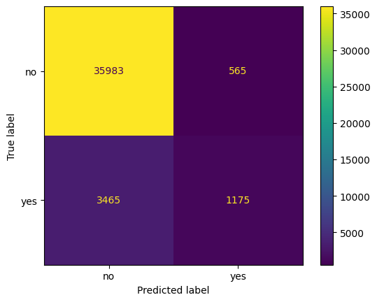
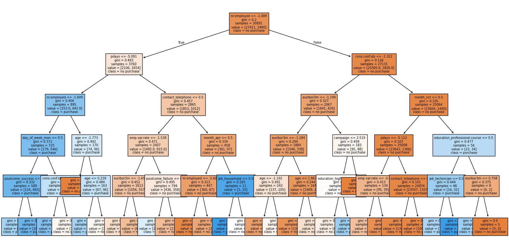
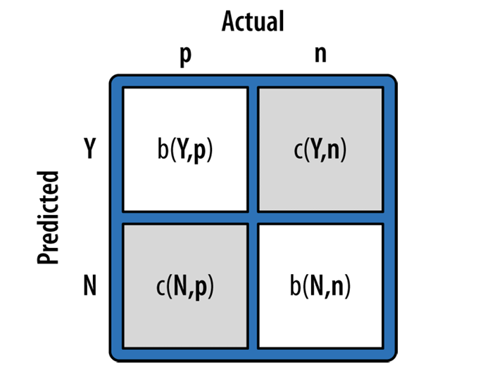

Introduction to Decision Trees#
OBJECTIVES
Understand how a decision tree is built for classification and regression
Fit decision tree models using
scikit-learnCompare and evaluate classifiers
import seaborn as sns
import numpy as np
import pandas as pd
import matplotlib.pyplot as plt
from sklearn.model_selection import train_test_split, GridSearchCV
from sklearn.tree import DecisionTreeClassifier, DecisionTreeRegressor, plot_tree
from sklearn.preprocessing import OneHotEncoder
from sklearn.pipeline import Pipeline
from sklearn.compose import make_column_transformer
from sklearn.metrics import ConfusionMatrixDisplay
from sklearn.inspection import DecisionBoundaryDisplay
Homework
from sklearn.datasets import fetch_openml
from sklearn.neighbors import KNeighborsClassifier
from sklearn.linear_model import LogisticRegression
from sklearn.tree import DecisionTreeClassifier
from sklearn.model_selection import train_test_split, GridSearchCV
from sklearn.pipeline import Pipeline
from sklearn.preprocessing import StandardScaler, OneHotEncoder
from sklearn.metrics import ConfusionMatrixDisplay
from sklearn.impute import SimpleImputer
from sklearn.compose import make_column_transformer
from sklearn import set_config
set_config(transform_output="pandas")
kidney = fetch_openml(data_id=42972).frame
kidney.head()
| id | age | bp | sg | al | su | rbc | pc | pcc | ba | ... | pcv | wc | rc | htn | dm | cad | appet | pe | ane | classification | |
|---|---|---|---|---|---|---|---|---|---|---|---|---|---|---|---|---|---|---|---|---|---|
| 0 | 0 | 48.0 | 80.0 | 1.020 | 1.0 | 0.0 | NaN | normal | notpresent | notpresent | ... | 44 | 7800 | 5.2 | yes | yes | no | good | no | no | ckd |
| 1 | 1 | 7.0 | 50.0 | 1.020 | 4.0 | 0.0 | NaN | normal | notpresent | notpresent | ... | 38 | 6000 | NaN | no | no | no | good | no | no | ckd |
| 2 | 2 | 62.0 | 80.0 | 1.010 | 2.0 | 3.0 | normal | normal | notpresent | notpresent | ... | 31 | 7500 | NaN | no | yes | no | poor | no | yes | ckd |
| 3 | 3 | 48.0 | 70.0 | 1.005 | 4.0 | 0.0 | normal | abnormal | present | notpresent | ... | 32 | 6700 | 3.9 | yes | no | no | poor | yes | yes | ckd |
| 4 | 4 | 51.0 | 80.0 | 1.010 | 2.0 | 0.0 | normal | normal | notpresent | notpresent | ... | 35 | 7300 | 4.6 | no | no | no | good | no | no | ckd |
5 rows × 26 columns
kidney.info()
<class 'pandas.core.frame.DataFrame'>
RangeIndex: 400 entries, 0 to 399
Data columns (total 26 columns):
# Column Non-Null Count Dtype
--- ------ -------------- -----
0 id 400 non-null int64
1 age 391 non-null float64
2 bp 388 non-null float64
3 sg 353 non-null float64
4 al 354 non-null float64
5 su 351 non-null float64
6 rbc 248 non-null object
7 pc 335 non-null object
8 pcc 396 non-null object
9 ba 396 non-null object
10 bgr 356 non-null float64
11 bu 381 non-null float64
12 sc 383 non-null float64
13 sod 313 non-null float64
14 pot 312 non-null float64
15 hemo 348 non-null float64
16 pcv 330 non-null object
17 wc 295 non-null object
18 rc 270 non-null object
19 htn 398 non-null object
20 dm 398 non-null object
21 cad 398 non-null object
22 appet 399 non-null object
23 pe 399 non-null object
24 ane 399 non-null object
25 classification 400 non-null object
dtypes: float64(11), int64(1), object(14)
memory usage: 81.4+ KB
kidney['rc'] = kidney['rc'].replace({"'t?'":np.nan}).replace("'t43'", np.nan).astype('float')
kidney['pcv'] = kidney['pcv'].replace("'t?'", np.nan).replace("'t43'", np.nan).astype('float')
kidney['wc'] = kidney['wc'].replace("'t6200'", np.nan).replace("'t8400'").replace("'t?'", np.nan).astype('float')
kidney.info()
<class 'pandas.core.frame.DataFrame'>
RangeIndex: 400 entries, 0 to 399
Data columns (total 26 columns):
# Column Non-Null Count Dtype
--- ------ -------------- -----
0 id 400 non-null int64
1 age 391 non-null float64
2 bp 388 non-null float64
3 sg 353 non-null float64
4 al 354 non-null float64
5 su 351 non-null float64
6 rbc 248 non-null object
7 pc 335 non-null object
8 pcc 396 non-null object
9 ba 396 non-null object
10 bgr 356 non-null float64
11 bu 381 non-null float64
12 sc 383 non-null float64
13 sod 313 non-null float64
14 pot 312 non-null float64
15 hemo 348 non-null float64
16 pcv 328 non-null float64
17 wc 293 non-null float64
18 rc 269 non-null float64
19 htn 398 non-null object
20 dm 398 non-null object
21 cad 398 non-null object
22 appet 399 non-null object
23 pe 399 non-null object
24 ane 399 non-null object
25 classification 400 non-null object
dtypes: float64(14), int64(1), object(11)
memory usage: 81.4+ KB
/var/folders/8v/7bhy8yqn04b7rzqglb2s38200000gn/T/ipykernel_122/1048509165.py:3: FutureWarning: Series.replace without 'value' and with non-dict-like 'to_replace' is deprecated and will raise in a future version. Explicitly specify the new values instead.
kidney['wc'] = kidney['wc'].replace("'t6200'", np.nan).replace("'t8400'").replace("'t?'", np.nan).astype('float')
cat_cols = kidney.select_dtypes('object').columns.tolist()
cat_cols = cat_cols[:-1]
num_cols = kidney.select_dtypes('number').columns.tolist()
ohe = OneHotEncoder(sparse_output=False)
imp_num = SimpleImputer(strategy = 'mean')
imp_cat = SimpleImputer(strategy = 'most_frequent')
scale = StandardScaler()
imputer = make_column_transformer((imp_num, num_cols),
(imp_cat, cat_cols),
verbose_feature_names_out=False,
remainder = 'passthrough')
ohe = make_column_transformer((ohe, cat_cols),
remainder = scale)
X_train, X_test, y_train, y_test = train_test_split(kidney.iloc[:, :-1], kidney.iloc[:, -1])
Customer Churn#
churn = pd.read_csv('https://raw.githubusercontent.com/jfkoehler/nyu_bootcamp_fa24/refs/heads/main/data/cell_phone_churn.csv')
churn.head()
| state | account_length | area_code | intl_plan | vmail_plan | vmail_message | day_mins | day_calls | day_charge | eve_mins | eve_calls | eve_charge | night_mins | night_calls | night_charge | intl_mins | intl_calls | intl_charge | custserv_calls | churn | |
|---|---|---|---|---|---|---|---|---|---|---|---|---|---|---|---|---|---|---|---|---|
| 0 | KS | 128 | 415 | no | yes | 25 | 265.1 | 110 | 45.07 | 197.4 | 99 | 16.78 | 244.7 | 91 | 11.01 | 10.0 | 3 | 2.70 | 1 | False |
| 1 | OH | 107 | 415 | no | yes | 26 | 161.6 | 123 | 27.47 | 195.5 | 103 | 16.62 | 254.4 | 103 | 11.45 | 13.7 | 3 | 3.70 | 1 | False |
| 2 | NJ | 137 | 415 | no | no | 0 | 243.4 | 114 | 41.38 | 121.2 | 110 | 10.30 | 162.6 | 104 | 7.32 | 12.2 | 5 | 3.29 | 0 | False |
| 3 | OH | 84 | 408 | yes | no | 0 | 299.4 | 71 | 50.90 | 61.9 | 88 | 5.26 | 196.9 | 89 | 8.86 | 6.6 | 7 | 1.78 | 2 | False |
| 4 | OK | 75 | 415 | yes | no | 0 | 166.7 | 113 | 28.34 | 148.3 | 122 | 12.61 | 186.9 | 121 | 8.41 | 10.1 | 3 | 2.73 | 3 | False |
Problem
Can you determine a value to break the data apart that seperates churn from not churn for the
day_mins? What about thecustserv_calls?
plt.figure(figsize = (15, 10))
sns.scatterplot(data = churn, x = 'day_mins', y = 'custserv_calls', hue = 'churn', s = 100)
plt.grid();

tree = DecisionTreeClassifier(max_depth = 2, criterion='entropy')
X = churn[['day_mins', 'custserv_calls']]
y = churn['churn']
tree.fit(X, y)
DecisionTreeClassifier(criterion='entropy', max_depth=2)In a Jupyter environment, please rerun this cell to show the HTML representation or trust the notebook.
On GitHub, the HTML representation is unable to render, please try loading this page with nbviewer.org.
DecisionTreeClassifier(criterion='entropy', max_depth=2)
fig, ax = plt.subplots(1, 2, figsize = (20, 5))
DecisionBoundaryDisplay.from_estimator(tree, X, ax = ax[0])
sns.scatterplot(data = X, x = 'day_mins', y = 'custserv_calls', hue = y, ax = ax[0])
ax[0].grid()
ax[0].set_title('Decision Boundary for Tree Model');
plot_tree(tree, feature_names=X.columns,
filled = True,
fontsize = 12,
ax = ax[1],
rounded = True,
class_names = ['no churn', 'churn'])
ax[1].set_title('Decision Process for Customer Churn');

Titanic Dataset#
#load the data
titanic = sns.load_dataset('titanic')
titanic.head(5) #shows first five rows of data
| survived | pclass | sex | age | sibsp | parch | fare | embarked | class | who | adult_male | deck | embark_town | alive | alone | |
|---|---|---|---|---|---|---|---|---|---|---|---|---|---|---|---|
| 0 | 0 | 3 | male | 22.0 | 1 | 0 | 7.2500 | S | Third | man | True | NaN | Southampton | no | False |
| 1 | 1 | 1 | female | 38.0 | 1 | 0 | 71.2833 | C | First | woman | False | C | Cherbourg | yes | False |
| 2 | 1 | 3 | female | 26.0 | 0 | 0 | 7.9250 | S | Third | woman | False | NaN | Southampton | yes | True |
| 3 | 1 | 1 | female | 35.0 | 1 | 0 | 53.1000 | S | First | woman | False | C | Southampton | yes | False |
| 4 | 0 | 3 | male | 35.0 | 0 | 0 | 8.0500 | S | Third | man | True | NaN | Southampton | no | True |
#subset the data to binary columns
data = titanic.loc[:4, ['alone', 'adult_male', 'survived']]
data
| alone | adult_male | survived | |
|---|---|---|---|
| 0 | False | True | 0 |
| 1 | False | False | 1 |
| 2 | True | False | 1 |
| 3 | False | False | 1 |
| 4 | True | True | 0 |
Suppose you want to use a single column to predict if a passenger survives or not. Which column will do a better job predicting survival in the sample dataset above?
Entropy#
One way to quantify the quality of the split is to use a quantity called entropy. This is determined by:
With a decision tree the idea is to select a feature that produces less entropy.
#all the same -- probability = 1
1*np.log2(1)
0.0
#half and half -- probability = .5
-(1/2*np.log2(1/2) + 1/2*np.log2(1/2))
1.0
#plot of entropy
def entropy(p):
return -(p*np.log2(p) + (1-p)*np.log2(1 - p))
p = np.linspace(0.0001, .99999, 100)
plt.plot(p, entropy(p))
plt.title('Entropy')
plt.xlabel('probability');

#subset the data to age, pclass, and survived five rows
data = titanic.loc[:4, ['age', 'pclass', 'survived']]
data
| age | pclass | survived | |
|---|---|---|---|
| 0 | 22.0 | 3 | 0 |
| 1 | 38.0 | 1 | 1 |
| 2 | 26.0 | 3 | 1 |
| 3 | 35.0 | 1 | 1 |
| 4 | 35.0 | 3 | 0 |
data.loc[data['pclass'] == 1]
| age | pclass | survived | |
|---|---|---|---|
| 1 | 38.0 | 1 | 1 |
| 3 | 35.0 | 1 | 1 |
#compute entropy for pclass
#first class entropy
first_class_entropy = -(2/2*np.log2(2/2))
first_class_entropy
-0.0
data.loc[data['pclass'] != 1]
| age | pclass | survived | |
|---|---|---|---|
| 0 | 22.0 | 3 | 0 |
| 2 | 26.0 | 3 | 1 |
| 4 | 35.0 | 3 | 0 |
#pclass entropy
third_class_entropy = -(1/3*np.log2(1/3) + 2/3*np.log2(2/3))
third_class_entropy
0.9182958340544896
#weighted sum of these
pclass_entropy = 2/5*first_class_entropy + 3/5*third_class_entropy
pclass_entropy
0.5509775004326937
data
| age | pclass | survived | |
|---|---|---|---|
| 0 | 22.0 | 3 | 0 |
| 1 | 38.0 | 1 | 1 |
| 2 | 26.0 | 3 | 1 |
| 3 | 35.0 | 1 | 1 |
| 4 | 35.0 | 3 | 0 |
#splitting on age < 30
entropy_left = -(1/2*np.log2(1/2) + 1/2*np.log2(1/2))
entropy_right = -(1/3*np.log2(1/3) + 2/3*np.log2(2/3))
entropy_age = 2/5*entropy_left + 3/5*entropy_right
entropy_age
0.9509775004326937
data
| age | pclass | survived | |
|---|---|---|---|
| 0 | 22.0 | 3 | 0 |
| 1 | 38.0 | 1 | 1 |
| 2 | 26.0 | 3 | 1 |
| 3 | 35.0 | 1 | 1 |
| 4 | 35.0 | 3 | 0 |
#original entropy
original_entropy = -((3/5)*np.log2(3/5) + (2/5)*np.log2(2/5))
original_entropy
0.9709505944546686
# improvement based on pclass
original_entropy - pclass_entropy
0.4199730940219749
#improvement based on age < 30
original_entropy - entropy_age
0.01997309402197489
Using sklearn#
The DecisionTreeClassifier can use entropy to build a full decision tree model.
X = data[['age', 'pclass']]
y = data['survived']
from sklearn.tree import DecisionTreeClassifier
#DecisionTreeClassifier?
#instantiate
tree2 = DecisionTreeClassifier(criterion='entropy', max_depth = 1)
#fit
tree2.fit(X, y)
DecisionTreeClassifier(criterion='entropy', max_depth=1)In a Jupyter environment, please rerun this cell to show the HTML representation or trust the notebook.
On GitHub, the HTML representation is unable to render, please try loading this page with nbviewer.org.
DecisionTreeClassifier(criterion='entropy', max_depth=1)
#score it
tree2.score(X, y)
0.8
#predictions
tree2.predict(X)
array([0, 1, 0, 1, 0])
Visualizing the results#
The plot_tree function will plot the decision tree model after fitting. There are many options you can use to control the resulting tree drawn.
from sklearn.tree import plot_tree
#plot_tree
fig, ax = plt.subplots(figsize = (5,5))
plot_tree(tree2,
feature_names=X.columns,
class_names=['died', 'survived'], filled = True);

PROBLEM
Build a Logistic Regression and Decision Tree pipeline to predict purchase. Assign the positive predictions probabilities to the variables plgr and ptree respectively.
purchase_data = pd.read_csv('https://raw.githubusercontent.com/jfkoehler/nyu_bootcamp_fa25/refs/heads/main/data/bank-direct-marketing-campaigns.csv')
purchase_data.head()
| age | job | marital | education | default | housing | loan | contact | month | day_of_week | campaign | pdays | previous | poutcome | emp.var.rate | cons.price.idx | cons.conf.idx | euribor3m | nr.employed | y | |
|---|---|---|---|---|---|---|---|---|---|---|---|---|---|---|---|---|---|---|---|---|
| 0 | 56 | housemaid | married | basic.4y | no | no | no | telephone | may | mon | 1 | 999 | 0 | nonexistent | 1.1 | 93.994 | -36.4 | 4.857 | 5191.0 | no |
| 1 | 57 | services | married | high.school | unknown | no | no | telephone | may | mon | 1 | 999 | 0 | nonexistent | 1.1 | 93.994 | -36.4 | 4.857 | 5191.0 | no |
| 2 | 37 | services | married | high.school | no | yes | no | telephone | may | mon | 1 | 999 | 0 | nonexistent | 1.1 | 93.994 | -36.4 | 4.857 | 5191.0 | no |
| 3 | 40 | admin. | married | basic.6y | no | no | no | telephone | may | mon | 1 | 999 | 0 | nonexistent | 1.1 | 93.994 | -36.4 | 4.857 | 5191.0 | no |
| 4 | 56 | services | married | high.school | no | no | yes | telephone | may | mon | 1 | 999 | 0 | nonexistent | 1.1 | 93.994 | -36.4 | 4.857 | 5191.0 | no |
purchase_data.info()
<class 'pandas.core.frame.DataFrame'>
RangeIndex: 41188 entries, 0 to 41187
Data columns (total 20 columns):
# Column Non-Null Count Dtype
--- ------ -------------- -----
0 age 41188 non-null int64
1 job 41188 non-null object
2 marital 41188 non-null object
3 education 41188 non-null object
4 default 41188 non-null object
5 housing 41188 non-null object
6 loan 41188 non-null object
7 contact 41188 non-null object
8 month 41188 non-null object
9 day_of_week 41188 non-null object
10 campaign 41188 non-null int64
11 pdays 41188 non-null int64
12 previous 41188 non-null int64
13 poutcome 41188 non-null object
14 emp.var.rate 41188 non-null float64
15 cons.price.idx 41188 non-null float64
16 cons.conf.idx 41188 non-null float64
17 euribor3m 41188 non-null float64
18 nr.employed 41188 non-null float64
19 y 41188 non-null object
dtypes: float64(5), int64(4), object(11)
memory usage: 6.3+ MB
cat_cols = purchase_data.select_dtypes('object').columns.tolist()
cat_cols
['job',
'marital',
'education',
'default',
'housing',
'loan',
'contact',
'month',
'day_of_week',
'poutcome',
'y']
cat_cols.remove('y')
cat_cols
['job',
'marital',
'education',
'default',
'housing',
'loan',
'contact',
'month',
'day_of_week',
'poutcome']
from sklearn.linear_model import LogisticRegression
from sklearn.preprocessing import StandardScaler
from sklearn.neighbors import KNeighborsClassifier
encoder = make_column_transformer((OneHotEncoder(sparse_output=False), cat_cols),
remainder = StandardScaler(),
verbose_feature_names_out=False)
knn_pipe = Pipeline([('transform', encoder), ('model', KNeighborsClassifier(n_neighbors=3))])
X = purchase_data.iloc[:, :-1]
y = purchase_data['y']
X_train, X_test, y_train, y_test = train_test_split(X, y, random_state=11, stratify = y)
knn_pipe.fit(X, y)
/Library/Frameworks/Python.framework/Versions/3.12/lib/python3.12/site-packages/sklearn/compose/_column_transformer.py:1623: FutureWarning:
The format of the columns of the 'remainder' transformer in ColumnTransformer.transformers_ will change in version 1.7 to match the format of the other transformers.
At the moment the remainder columns are stored as indices (of type int). With the same ColumnTransformer configuration, in the future they will be stored as column names (of type str).
To use the new behavior now and suppress this warning, use ColumnTransformer(force_int_remainder_cols=False).
warnings.warn(
Pipeline(steps=[('transform',
ColumnTransformer(remainder=StandardScaler(),
transformers=[('onehotencoder',
OneHotEncoder(sparse_output=False),
['job', 'marital',
'education', 'default',
'housing', 'loan', 'contact',
'month', 'day_of_week',
'poutcome'])],
verbose_feature_names_out=False)),
('model', KNeighborsClassifier(n_neighbors=3))])In a Jupyter environment, please rerun this cell to show the HTML representation or trust the notebook. On GitHub, the HTML representation is unable to render, please try loading this page with nbviewer.org.
Pipeline(steps=[('transform',
ColumnTransformer(remainder=StandardScaler(),
transformers=[('onehotencoder',
OneHotEncoder(sparse_output=False),
['job', 'marital',
'education', 'default',
'housing', 'loan', 'contact',
'month', 'day_of_week',
'poutcome'])],
verbose_feature_names_out=False)),
('model', KNeighborsClassifier(n_neighbors=3))])ColumnTransformer(remainder=StandardScaler(),
transformers=[('onehotencoder',
OneHotEncoder(sparse_output=False),
['job', 'marital', 'education', 'default',
'housing', 'loan', 'contact', 'month',
'day_of_week', 'poutcome'])],
verbose_feature_names_out=False)['job', 'marital', 'education', 'default', 'housing', 'loan', 'contact', 'month', 'day_of_week', 'poutcome']
OneHotEncoder(sparse_output=False)
['age', 'campaign', 'pdays', 'previous', 'emp.var.rate', 'cons.price.idx', 'cons.conf.idx', 'euribor3m', 'nr.employed']
StandardScaler()
KNeighborsClassifier(n_neighbors=3)
knn_pipe.score(X, y)
0.9249295911430514
y.value_counts(normalize = True)
y
no 0.887346
yes 0.112654
Name: proportion, dtype: float64
ConfusionMatrixDisplay.from_estimator(knn_pipe, X, y)
<sklearn.metrics._plot.confusion_matrix.ConfusionMatrixDisplay at 0x135b6f0e0>

prob_positive = knn_pipe.predict_proba(X)[:, 1]
prob_positive
array([0. , 0. , 0. , ..., 0.33333333, 0.33333333,
0.66666667])
results = pd.DataFrame({'y': y, 'prob_pos': prob_positive})
results.head()
| y | prob_pos | |
|---|---|---|
| 0 | no | 0.0 |
| 1 | no | 0.0 |
| 2 | no | 0.0 |
| 3 | no | 0.0 |
| 4 | no | 0.0 |
results = results.sort_values(by = 'prob_pos', ascending = False)
results.reset_index(inplace = True, drop = True)
results.head()
| y | prob_pos | |
|---|---|---|
| 0 | yes | 1.0 |
| 1 | yes | 1.0 |
| 2 | yes | 1.0 |
| 3 | yes | 1.0 |
| 4 | yes | 1.0 |
results.iloc[:41188//10, :]['y'].value_counts()
y
yes 2634
no 1484
Name: count, dtype: int64
y.value_counts()
y
no 36548
yes 4640
Name: count, dtype: int64
2634/4640
0.5676724137931034
results.iloc[:(41188//10)*2, :]['y'].value_counts()
y
no 4265
yes 3971
Name: count, dtype: int64
3971/4640
0.8558189655172413
What does it mean? If we use our model to contact 20% of the most probable to subscribe customers, we would be able to target 85% of the positives.
Problem
Build a DecisionTreeClassifier pipeline to predict purchase, grid searching max_depth parameter. Is this better than the knn model in terms of lift when constrained to the 20% most likely customers to churn.
tree_pipe = Pipeline([('transform', encoder), ('model', DecisionTreeClassifier())])
params = {'model__max_depth': [1, 2, 3, 4, 5, 6, 7]} #fill in the appropriate parameter
tree_grid = GridSearchCV(tree_pipe, param_grid=params)
tree_grid.fit(X_train, y_train)
/Library/Frameworks/Python.framework/Versions/3.12/lib/python3.12/site-packages/sklearn/compose/_column_transformer.py:1623: FutureWarning:
The format of the columns of the 'remainder' transformer in ColumnTransformer.transformers_ will change in version 1.7 to match the format of the other transformers.
At the moment the remainder columns are stored as indices (of type int). With the same ColumnTransformer configuration, in the future they will be stored as column names (of type str).
To use the new behavior now and suppress this warning, use ColumnTransformer(force_int_remainder_cols=False).
warnings.warn(
GridSearchCV(estimator=Pipeline(steps=[('transform',
ColumnTransformer(remainder=StandardScaler(),
transformers=[('onehotencoder',
OneHotEncoder(sparse_output=False),
['job',
'marital',
'education',
'default',
'housing',
'loan',
'contact',
'month',
'day_of_week',
'poutcome'])],
verbose_feature_names_out=False)),
('model', DecisionTreeClassifier())]),
param_grid={'model__max_depth': [1, 2, 3, 4, 5, 6, 7]})In a Jupyter environment, please rerun this cell to show the HTML representation or trust the notebook. On GitHub, the HTML representation is unable to render, please try loading this page with nbviewer.org.
GridSearchCV(estimator=Pipeline(steps=[('transform',
ColumnTransformer(remainder=StandardScaler(),
transformers=[('onehotencoder',
OneHotEncoder(sparse_output=False),
['job',
'marital',
'education',
'default',
'housing',
'loan',
'contact',
'month',
'day_of_week',
'poutcome'])],
verbose_feature_names_out=False)),
('model', DecisionTreeClassifier())]),
param_grid={'model__max_depth': [1, 2, 3, 4, 5, 6, 7]})Pipeline(steps=[('transform',
ColumnTransformer(remainder=StandardScaler(),
transformers=[('onehotencoder',
OneHotEncoder(sparse_output=False),
['job', 'marital',
'education', 'default',
'housing', 'loan', 'contact',
'month', 'day_of_week',
'poutcome'])],
verbose_feature_names_out=False)),
('model', DecisionTreeClassifier(max_depth=5))])ColumnTransformer(remainder=StandardScaler(),
transformers=[('onehotencoder',
OneHotEncoder(sparse_output=False),
['job', 'marital', 'education', 'default',
'housing', 'loan', 'contact', 'month',
'day_of_week', 'poutcome'])],
verbose_feature_names_out=False)['job', 'marital', 'education', 'default', 'housing', 'loan', 'contact', 'month', 'day_of_week', 'poutcome']
OneHotEncoder(sparse_output=False)
['age', 'campaign', 'pdays', 'previous', 'emp.var.rate', 'cons.price.idx', 'cons.conf.idx', 'euribor3m', 'nr.employed']
StandardScaler()
DecisionTreeClassifier(max_depth=5)
ConfusionMatrixDisplay.from_estimator(tree_grid, X, y)
<sklearn.metrics._plot.confusion_matrix.ConfusionMatrixDisplay at 0x13593ba10>

plt.figure(figsize = (20, 10))
plot_tree(tree_grid.best_estimator_['model'], feature_names=tree_pipe['transform'].get_feature_names_out(),
class_names = ['no purchase', 'purchase'],
filled = True,
fontsize=7);

Problem
For next class, read the chapter “Decision Analytic Thinking: What’s a Good Model?” from Data Science for Business. Pay special attention to the cost benefit analysis. You will be asked to use cost/benefit analysis to determine the “best” classifier for an example dataset next class.

#example cost benefit matrix
cost_benefits = np.array([ [0, -1], [0, 99]])
cost_benefits
array([[ 0, -1],
[ 0, 99]])
The expected value is computed by:
use this to calculate the expected profit of the Decision Tree and KNN Regression model. Which is better? Expected Value and argument in slack.
from sklearn.metrics import confusion_matrix
mat = confusion_matrix(y, tree_grid.predict(X))
mat
array([[35983, 565],
[ 3465, 1175]])
mat.sum()
41188
mat/mat.sum()
array([[0.87362824, 0.01371759],
[0.08412644, 0.02852773]])
(mat/mat.sum())*cost_benefits
array([[ 0. , -0.01371759],
[ 0. , 2.82424493]])
#expected profit for decision tree model
(((mat/mat.sum())*cost_benefits)).sum()
2.810527338059629
knn_mat = confusion_matrix(y, knn_pipe.predict(X))
knn_mat/knn_mat.sum()
array([[0.87030203, 0.0170438 ],
[0.05802661, 0.05462756]])
#expected profit for logistic model
((knn_mat/knn_mat.sum())*cost_benefits).sum()
5.391084781975333
EXIT TICKET: here